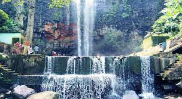

SAHIBGANJ
(The Center of Beauty of Nature)
MOTI JHARNA
A nice place for a day trip near the town of Sahibganj (Jharkhand). The volume of water increases during the rainy season. We visited in August last year (it was nearly 10-15 days without rains that time)- and the water was already quite thin. The area is quite green, and during the month of Sravana (July-August), many pilgrims visit the falls on their way to Baba Baidyanath Dham (Deoghar)- so its quite safe then. There is a small mandir (temple) near the falls. Most of my partners had a nice shower. For people visiting from far off places, three points are to be considered: (1) There is a dearth of good hotels in the town of Sahibganj, and there can be cases of your pre-booking given to someone else if the demand is great (like during examinations for Govt. jobs / railways, etc); (2) Medical facilities just do not exist (in the town) in real terms- we had a friend who needed to be taken to hospital, and what followed was a terrible experience; and (3) Better to take AC vehicles from Sahibganj to the Jharna spot. This 40-45 minute ride can be a bitter experience if you travel in auto / cars with windows open- in roads that almost do not exist (it did not exist when we travelled), and the air is so polluted due to illegal mining activities (they are just stealing away the hills- may be in the next 20-30 years, the whole area will be flattened), so the dust will not only make you look white, but also cause serious problem to your lungs. However, on reaching the spot, you will like it.


